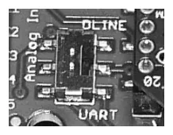
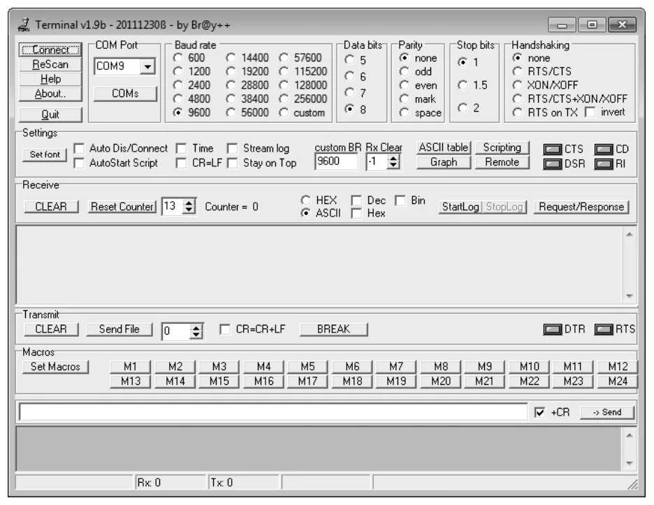
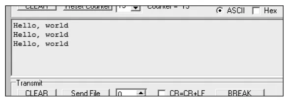

This project will demonstrate simple data transmission by sending data from an Arduino to a computer that has an XBee and Explorer board. The project involves two basics steps: First, we’ll connect an XBee to an XBee shield. Then we’ll connect the shield to the Arduino.
Notice the tiny switch on the Arduino shield, as shown in Figure 14-9.

This switch is identical to the switch on the GPS shield used in Chapter 13. This data switch controls whether data from the Arduino USB or the XBee is sent to the microcontroller. When you’re uploading a sketch, set the switch to DLINE; you’ll change it to UART when you’re running a sketch.
The Sketch
Create and upload the following sketch:
// Project 48 - Transmitting Data with an XBee
void setup()
{
Serial.begin(9600);
}
void loop()
{
Serial.println("Hello, world");
delay(1000);
}Although this code simply sends the text Hello, world to the serial line, it nicely demonstrates the simplicity of using XBee modules to send data: You simply write to the serial line, and the XBee takes care of the rest. Remove the USB cable from the Arduino board, and power the board using an external supply such as the 9 V battery and cable from Chapter 12. (Don’t forget to set the switch back to UART.)
Setting Up the Computer to Receive Data
Now let’s set up the computer to receive data. Using an Explorer board (Figure 14-8), connect another XBee to your computer. Then download and install the Terminal program, available for Windows from https://sites .google.com/site/terminalbpp/. When you open Terminal, you should see a screen like the one shown in Figure 14-10.

At the top of the screen, set the Baud Rate to 9600, Data Bits to 8, Parity to none, Stop Bits to 1, and Handshaking to none. Then click the ReScan button in the upper-left corner to force the software to select the correct USB port. Finally, click Connect, and after a moment you should see data being sent from the Arduino in the Terminal window, as shown in Figure 14-11.

You can attach multiple XBee transmitters to one computer, with each sending its own data for monitoring purposes. For example, from the comfort of your desk, you could monitor various sensors, such as temperature sensors, placed throughout an area. You could even control multiple XBee-connected Arduinos using a similar method, as you’ll see in the next project.